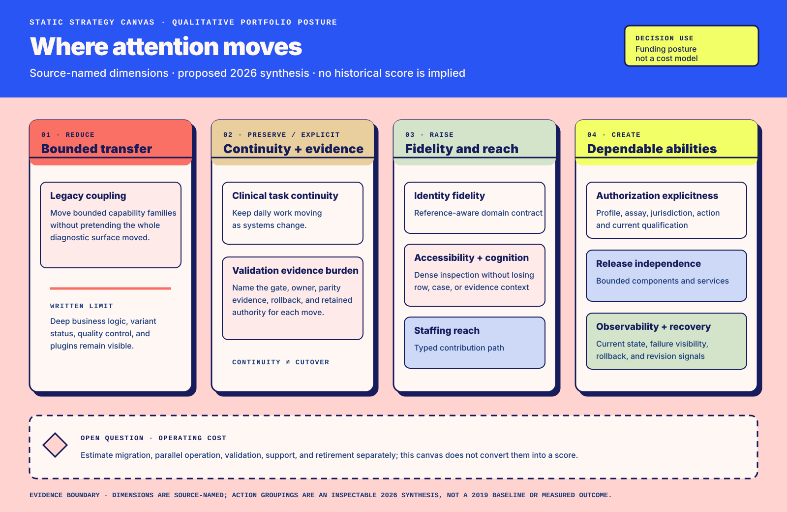
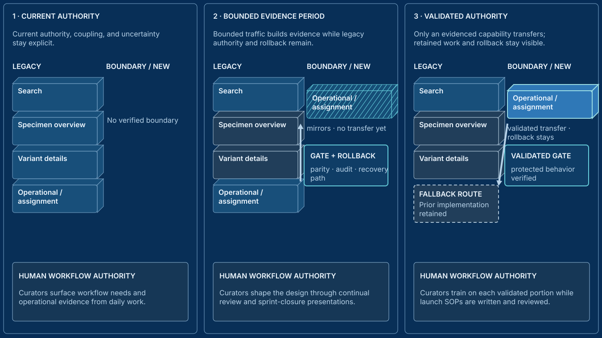
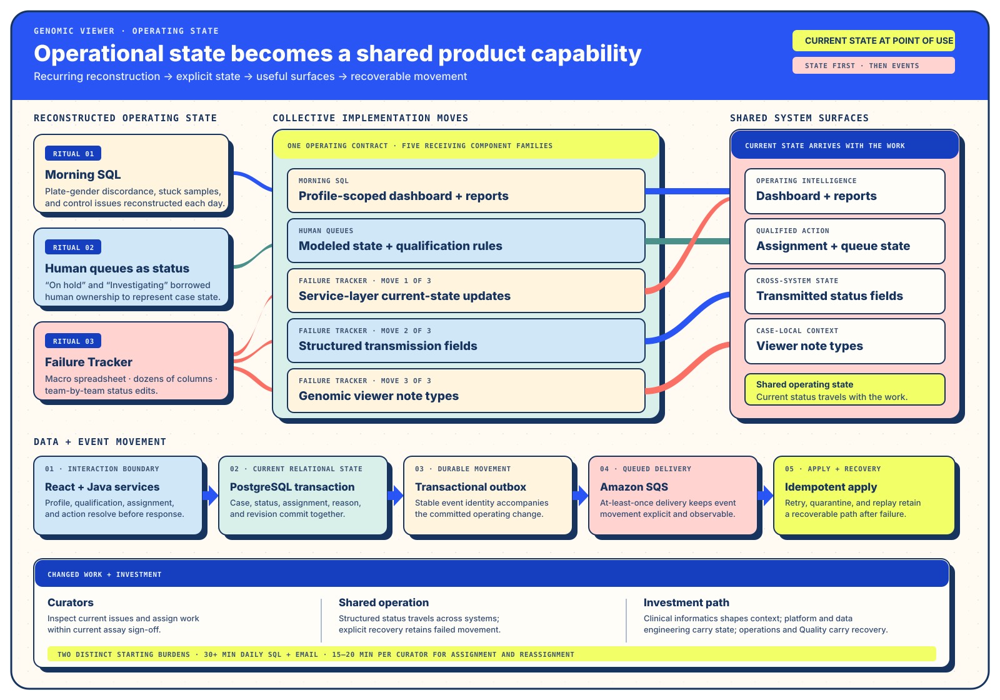
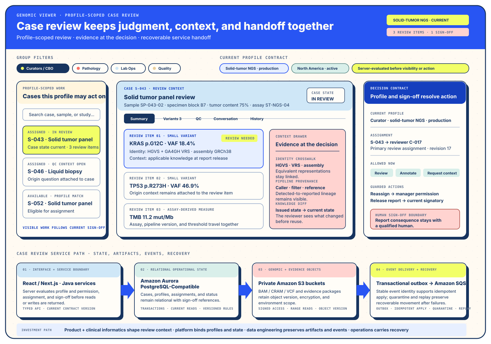

First responsible version
Profile, permission, assignment
Make qualified work visible, make actions explicit, and give later automation a reliable boundary.
Design · Implementation · Q1 2019 & Q1 2023—2025
How I rearchitected core company genomics applications
Foundation Medicine turns tumor-genome data into information clinicians use to match people with cancer to therapies and trials. I rearchitected the front-end of their genomic-viewer applications while clinical work kept moving.
I was asked to redesign the experience and rearchitect the front end of Foundation Medicine’s FDA-regulated clinical-genomics viewer. My work spanned UX research, UX/UI design, React with TypeScript, and Java services on Spring—connecting clinical workflows with the systems that supported them.
Basis and limits: I designed and implemented the delivered interfaces and services within a purposeful partial migration; complex Spring transformations, DTOs, database mediation, and portions of the underlying stack remained legacy-owned.
The demonstration follows one specimen from its overview through quality gates, biomarker review, instruction state, and readiness checks. Try it yourself.
Track I Design · Population Context and Changed Work
A patient's sample went into a sequencer, and several hours and nearly six terabytes of data later, it became digital information used to make decisions about a patient's treatment. That's 25 iPhones stuffed to the brim and juggled between on-prem and cloud services for every run.
There was a single application everybody at the company relied on to see the results of that sequencing off the analysis pipeline. It was my job to redesign it from the ground up and rearchitect its front-end.
Launched in 2008 — right alongside the first Twilight movie — it started out as a lightweight internal tool. But through an acquisition, new product launches, and heavy automation, it hardened like Edward Cullen’s granite-like skin into a mission-critical system within an FDA-regulated environment.
Redesigning an internal system is more than a software update. It is altering the tools people use to pay their rent, cover their student loans, and afford their dog’s vet bills. In this environment, bad code triggers a product recall. Bad design could put a patient on the wrong treatment.
At a Genomic Curator's desk, one case would spread out over a laptop, a second monitor, the viewer application itself, IGV, internal wikis, reference files, and many browser tabs. They were overloaded. The architectural question was which work, decisions, and handoffs had become core operating elements, and which investment would let them change safely?
The biggest bottleneck should've been that the system was a monolithic SaMD subjected to extreme load and long regulatory approval cycles. That was fine. The problem was that this arcane piece of technology, forged from the coolest technology of 2006, was highly performant.
The legacy system was fast and reliable. Adding the latest scientific advancements straight into the old codebase was always the fastest path forward.
Every new feature added pushed the redesign further out.
Longitudinal working queues meant for humans were renamed to carry hidden operational states such as “on hold.” The product still needed a granular model for profile, assay, jurisdiction, and action.2
The same hidden-state pattern appeared elsewhere. Study names acted as a hidden ETL layer: they carried partner workflow, repeated validation, and environment distinctions inside labels that looked descriptive.

The team ultimately decided against building a plate-viewer like this, yet imagining what it could look like sparked the entire redesign. I started with a simple prompt: "Suppose we are founding a new company from scratch. How would we build this if we weren't held back by legacy tech?"
Moving fast from that blank slate introduced an unexpected friction. Switching hats between designer and engineer across sprints, I went straight to code-ready, high-fidelity prototypes to shorten the path to production. To the operators relying on the system, however, high polish looked like a done deal. The train was leaving the station without them, and their workflows rewritten without their input.
A selection of issues I discovered during design research:
One of the biggest bottlenecks became talent acquisition and hiring. Try finding an engineer who can maintain a stack from the year Twitter launched on Monday and ship concurrent React rendering in the cloud by Thursday.
| Shared concern | Design Finding | Implementation Pattern | Enterprise impact |
|---|---|---|---|
| Operational role | Research tools become operational infrastructure. | The stack defines who can contribute and how behavior is shared. | Replatforming changes the operating model as well as the screens. |
| State contract | Queues, spreadsheets, and SQL rituals hold operational states outside the product. | Explicit permission and state models, service-layer current reads, and structured fields carry the state across boundaries. | Coordination relies on shared system state and minimizes fragile local reconstruction. |
| Permission profile | Cases were manually assigned and should be gated based on user qualification. | A permission ledger governed which React components, table columns, and row or bulk actions were available to each user. Spring security annotations enforced authorization on the APIs behind them. | Routing and automation can apply the same profile and permission rules. |
| Case status | Point-of-use evidence starts a file hunt. Daily SQL queries and emails communicate static capacity snapshots. | Dynamic dashboards replace clipped results. Service updates, structured fields, and note types replace spreadsheet-carried state. | Operational intelligence becomes shared, current, and profile-scoped. |
| Reusable behavior | Participants learn to write specifications for the work they carry. | Tests, stories, components, and upstream revision keep that behavior executable. | New teams inherit described behavior instead of reconstructing colleague memory. |
Profiles and permissions became the MVP: the smallest product change able to align current sign-off, assignable cases, and permitted actions. This converted an abstract re-platforming into an operating contract with explicit requirements that could support deterministic routing later.3
A strangler approach moved the operational and assignment layers first while reusing Java services. Values already present in the system moved to the point of use. High-impact improvements supported current work while the target architecture developed, and expensive system-wide interface concepts were retired when they weakened the migration.
Participant time was scarce and expensive, so the research rhythm mixed budgeted synchronous sessions, concise leave-behinds, and asynchronous prototype review. Live interface states gave scientists and operators something specific to correct. Specification by Example then carried their language into scenarios that design, engineering, and quality work could examine together.
What if we just showed it to you in the interface, so it’s unnecessary to even have to go find that file and open it up?
My project recollection

The access grid turns a broad permission conversation into component-level questions: which profiles reveal a tab, expose a column, enable row or select-all actions, or authorize an API request?

| Action | Source-named dimensions | Decision meaning |
|---|---|---|
| Reduce | Legacy coupling | Move bounded capability families while retained legacy ownership stays visible. |
| Preserve / make explicit | Clinical task continuity; validation evidence burden | Keep consequential work usable and name the acceptance condition, evidence, rollback, and owner for each move. |
| Raise | Identity fidelity; accessibility and cognitive load; staffing reach | Increase reference fidelity, inspection support, and a typed contribution path. |
| Create | Authorization explicitness; release independence; observability and recovery | Establish dependable operating abilities the legacy viewer left implicit or coupled. |
| Open question | Operating cost | Estimate migration, parallel operation, validation, support, and retirement separately. |
User segmentation · Context Tree · Design research
Curation, Pathology, Computational Biology, Medical Affairs, Quality, and partner-facing groups each make a different decision about the same case in the same genomic viewer.

My profile and permission work eliminated recurring assignment errors and enabled qualified automatic assignment. My Advanced Search redesign spread across business units with little internal promotion. Direct users responded strongly to working versions, and quiet adoption indicated everyday fit. These observations establish adoption; usage breadth and causal magnitude require separate measurement.4
The redesign provided a more flexible, intuitive way to manage and view genomic data:
Profile-scoped dashboards moved morning reconstruction into a shared dashboard. Structured notes recorded human interventions across tiered automation candidates, making the remaining judgment work countable and reviewable.
What held up was the decision contract: role-local context, an Impact Map, profile-first decomposition, scenario-shaped specifications, and visible operational state let participating units inspect the work together. What changed was its expression—screens, services, components, and tests evolved as operating learning returned upstream. What travels is the method: the same Core Architectures supported the FMI LIMS/ELN re-platforming, providing a second materially different application setting. People who carried the work began writing specifications for its behavior.5
Figure 4 turns the architecture inward. The Specification Suite gives experience, executive, design, engineering, regulatory, and cognitive-security questions a shared directory and a named review route. The paired Strategy Canvas compares current and desired engineering conditions so the Solution track can include the right expertise early and the Implementation track can attach scenarios, tests, owners, and release conditions to the same capability.
I created this IP-free 2026 example in Figma Make from kindlight.systems architecture definitions. Its labels, weights, and maturity scores are current planning inputs for review. Historical program measurements remain grounded in the genomic-viewer project record.

Track II Implementation · State, Authority, and Recovery
The legacy client compiled Java into browser code through GWT. React, TypeScript, MUI's data grid, and Storybook offered a more familiar contribution path for engineers whose primary experience was in backend systems. I built the visual system, core tables, forms, modes, super-header, and component library; the wider engineering group extended the same component foundation.6
I designed and implemented the React and TypeScript interface layer, maintained GWT interoperability, and worked across Java services, DTOs, and database mediation. Browse my GitHub source code for an example of a multi-theme setup in React.js/ Typescript.
The stack was an arrangement for shared work, and the same team needed to maintain the existing application: runnable component states connected design, implementation, onboarding, and testing across the core group and a 50-plus-engineer organization.
In addition to the Computational Biology Engineering group, the project required practively engaging hundreds of other engineers working across Cloud Platform, Medical Reporting, Systems Engineering, Process Automation, Quality Engineering, and more.
My contemporary interpretation is that generative AI widens the consequence of that choice. A new contributor may now shape a component family or connected code area in one collaboration cycle. Typed contribution paths, runnable states, tests, review capacity, and clear ownership determine whether that reach becomes safe participation. Current research describes both gains and slowdowns across different settings.
The stack an organization uses, develops, and maintains dictates who they can hire.
My experience
The opening frame shows the adjustable viewport boundary: the interface occupies the left side, and the dark field to its right is the remaining resize canvas. Three connected interfaces reflow across wide and narrow viewports while their controls, status cues, and record details remain available.

This corridor isolates the computational-biology portion served by the viewer so participants can correct its boundaries, gates, and handoffs. Figure 9 later restores the complete accession-to-report process and keeps a local implementation choice connected to the laboratory system it must support.
JSNI placed raw JavaScript inside Java, and gwt-react provided a historically useful but fragile bridge. Lifecycle, validation, DTO handling, payload size, and paint cost accumulated at the interoperability boundary. The Masonry concept I designed was widely loved, yet its global mounting and validation demands threatened to stall the migration.7
When I say it was widely loved, I mean pathologists were leaving me voice notes while on the drive home to tell me ideas about it. People were highly engaged.
Even so, I knew it had to be retired. The real insight behind the Masonry view was that clinicians needed to compare specimens and results side by side. While the layout worked visually, mounting those components in parallel, coordinating their state, and lazy-loading them safely was costly—and risked stale patient data bleeding across components if a user refreshed repeatedly.
The rest of the engineering team was surprised to learn how badly users needed cross-sample comparison and initially pushed back. Once they saw how much JSON over-fetching it took just to compare a handful of metrics across dozens of specimens, they moved fast. A Senior Engineer built a dedicated Spring service behind @PreAuthorize role checks, exposing a lightweight comparison API that our React components could consume cleanly with useQuery.

Familiar e-commerce patterns and Baymard's product-list research supplied a practical grammar for scanning, filtering, comparing, and finding dense information.21 Participants wanted the Masonry concept across the application because it made many kinds of work feel coherent. An Associate Director of Computational Biology Engineering also pressed for enough visible differentiation to make the investment legible. The design succeeded as a shared language, then I retired my own favored global treatment when its coupled lifecycle and validation cost exceeded what the migration could safely carry.

A typed update boundary can keep an omitted field, an explicit clear, an intentionally empty object, and meaningful falsy values distinct before JSON serialization. My work on the viewer established the organizational and interoperability context. The company-neutral Registry artifact is a later, independently authored runnable mechanism with its own source, tests, and version. Inspect typed absence and wire shape in TypeScript.
The exploding-table modal kept the dense row scan intact while moving assembly-aware variant detail into a focused interaction. A permission ledger bound profile, assay, product, geography, jurisdiction, lifecycle, and action. The Floating Drawer made references and actions available across tabs without duplicating each capability.8
Sample collaboration moved beside the sample record, reducing per-sample Slack channels and ServiceNow tickets. Case & Automated Advice replaced the Failure Tracker with match criteria, history, and recoverable state. These were distinct component moves, but they shared one architectural effect: evidence, action, and operating state arrived in the context where judgment occurred.
An Associate Director of Computational Biology Engineering helped keep scientific fidelity and visible product improvement in the same decision. Server-side permission checks preserved the authorization boundary while profiles supported qualified assignment. Structured notes made human interventions countable, the dashboard made operational state inspectable, and the component library gave each bounded move a shared implementation language.
The demonstration connects regional access rules with connection settings, interface preferences, and observable failure behavior.

The persistent COSMIC banner marks a dependency that continues to constrain work; transient toasts carry shorter authentication and probe events. Showing both channels gives engineering and operations a concrete way to decide which failures call for retry with backoff and jitter, which need durable escalation, and how WebSocket updates, query fan-out, and concurrent case edits or reassignments should reconcile on another Curator’s open screen.

A profile-scoped dashboard surfaced plate-gender discordance, stuck samples, and control issues. Three implementation changes reduced reliance on the Failure Tracker and overloaded queues: service-layer updates for current reads, structured fields on downstream transmission assets, and first-class note types in the viewer.9
My dashboard work retired a daily SQL-and-email ritual that took more than twenty minutes. This saving applied to morning operating intelligence and is separate from the fifteen-to-twenty-minute assignment saving. My structured-note work made human interventions countable across tiered automation candidates. Those counts identified where judgment entered the workflow and which automation candidates needed more evidence; comparative automation quality and clinical effect require separate evaluation.
The change gave each tracker job a fitting home: current reads in the service layer, transmission state in structured fields, intervention history in notes, and profile-scoped exceptions in the dashboard. The result preserved the distinct work behind the tracker while retiring the spreadsheet as its shared operating record.

Curators specifically asked to see the active environment because training, partner studies, validation, and research carried different work. The proposed readiness percentage records another useful question: which steps count, how should they be weighted, when should the value recalculate, and when could one number misstate a case? Those semantics remained a post-MVP research and implementation decision.

Unit-Test-First Design, the Upstream Revision Loop, Storybook, and Testing Library joined scenario, component, implementation, and repair. An observed defect could revise the specification, component state, and test together. Managers, QA, engineers, and domain experts could inherit described behavior instead of reconstructing it from colleague memory.10
Those scenarios also preserved operating knowledge through reorganizations, manager changes, and shifting delivery teams. A new participant could inspect the accepted behavior, run the component state, and see where later learning belonged. Continuity came from the shared examples and executable states rather than from any one person's availability.
Scenario
Test
Story
Component
Revision

The full corridor is an orientation and correction instrument: laboratory, computational, quality, and reporting teams can point to the boundary where their account diverges, then revise the named transition while preserving the surrounding process. It keeps the computational slice in Figure 5 proportional to the complete clinical workflow.
The transferable test begins where two competent systems can still disagree. In NCI-MATCH, detection agreement remained high across 28 assays and 26 laboratories while filtering and interpretation contributed to reporting differences. A VICC study similarly found that harmonizing variant representations increased overlap across six oncology knowledgebases.11, 12 Those bounded findings make the component library more useful when it preserves the transitions and context behind a displayed answer.

The chain also gives Pathologists a place to show where work moves backward. A threshold-adjacent quality metric or subtle sequencing artifact may return a case to curation or trigger re-sequencing, creating multiple records for one patient. The prototype brings that loop into the conversation so repeat and re-sequenced records can stay distinct from longitudinal assays through an explicit test-type model.

Each architectural move enabled an ability and reduced or retired a named reconstruction task. The investment lines show the organizational work required to make that ability durable.
| Investment and capability | Prior work reduced or retired | Receiving populations | Changed ability | Material investment lines |
|---|---|---|---|---|
| Profile and permission ledger | Assay-blind self-assignment, random reassignment, and action rules inferred from authentication. | CBO / Genomic Curators; Pathology; managers. | Cases, reports, and actions follow current sign-off; routing applies shared authorization rules. | Development; security and privacy; quality work; training. |
| Configurable dashboard and reports | Morning SQL, emailed summaries, and manual exception searches. | Curators; Pathology; adjacent operational units. | Plate-gender discordance, stuck samples, and control issues become current and profile-scoped. | Development; integration; observability; support. |
| Structured status, transmission fields, and note types | Human queues used as status and the macro-based Failure Tracker. | Downstream systems and teams maintaining shared status columns. | Operational state becomes first-class data and travels in structured form. | Integration; parallel operation; migration; schema stewardship; support. |
| Advanced Search | Clipped result sets and local cohort workarounds. | Business units including groups finding patients for partner trials. | One search interface becomes useful across organizational boundaries. | Development; integration; onboarding; support. |
| Typed components, stories, and tests | Relearning proprietary interface conventions and reconstructing behavior from colleagues. | Engineers, QA, incoming managers, and domain experts. | Reusable behavior becomes inspectable, testable, and easier to extend. | Component engineering; documentation; test design; continued maintenance. |
The same replatforming changes different work for each population.
| Population | Prior work | Changed work | Receiving interface or artifact | Remaining responsibility |
|---|---|---|---|---|
| Curators / CBO | Self-assignment, SQL checks, file hunting, and Slack recovery. | Profile-scoped queues, dashboard triage, visible references, and in-case collaboration. | Profile arranger, dashboard, Floating Drawer, Collaboration. | Scientific judgment, sign-off, and consequential exception handling. |
| Pathology | Open cases individually and reconcile evidence across views. | Read consistent identity, actionable variants, and QC state; reach IGV and COSMIC in context. | Super-header, Summary and Digest, high-contrast mode. | Diagnostic-consequence decisions and current qualification. |
| Managers | Coordinate sign-offs, trainees, and review eligibility manually. | Batch-manage granular capability profiles. | Profile administration. | Keep qualifications and assignments current. |
| Client Services | Traverse several systems to answer status and hold questions. | Read a comprehensible case digest. | Summary and Digest. | Carry customer context and route scientific questions appropriately. |
| QA and incoming managers | Reconstruct expected behavior from people and scattered documentation. | Extend scenarios that also serve as tests and component states. | Specification-by-Example suite and Storybook. | Revise the upstream behavior when operating learning changes it. |
| Engineers | Learn proprietary UI conventions before contributing. | Contribute through typed components, runnable stories, and shared test contracts. | Component library and verification portfolio. | Preserve integration continuity and keep each retired integration boundary explicit. |
| Sponsors and operations | Receive private emailed morning summaries. | Inspect shared, profile-scoped operating intelligence. | Operations dashboard. | Fund remaining capability transfer and operational support. |
I was lucky to build alongside a sharp, collaborative team. Looking back, the one thing I would establish earlier is a strict contract around null, undefined, and genuinely empty values. Mapping how those states serialize from Spring through a Node layer and into React up front would have saved us from chasing subtle edge-case bugs right before launch.
Read Rebuilding the Genomic Viewer While the Work Continued for the role context, organizational tensions, and historical evidence behind this Debrief.
The citations above trace historical observations, time effects, adoption breadth, and error reduction. Current technical companions clarify portable implementation patterns. Later reference work carries its own evidence period and authority.